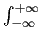

suivant: Polynôme de Laguerre :
monter: Polynômes orthogonaux
précédent: Polynôme de Legendre :
Table des matières
Index
Polynôme de Hermite : hermite
hermite a comme argument un entier n et eventuellement le
nom de la variable (x par défaut).
hermite renvoie le polynôme de Hermite de degré n.
Le polynôme de Hermite de degré n noté P(n, x) vérifie les relations
:
P(0, x) = 1
P(1, x) = 2x
P(n, x) = 2xP(n - 1, x) - 2(n - 1)P(n - 2, x)
Ces polynômes sont orthogonaux pour le produit scalaire :
< f, g > = f (x)g(x)e-x2dx
On tape :
hermite(6)
On obtient :
64*x^6+-480*x^4+720*x^2-120
On tape :
hermite(6,y)
On obtient :
64*y^6+-480*y^4+720*y^2-120
Documentation de giac écrite par Renée De Graeve